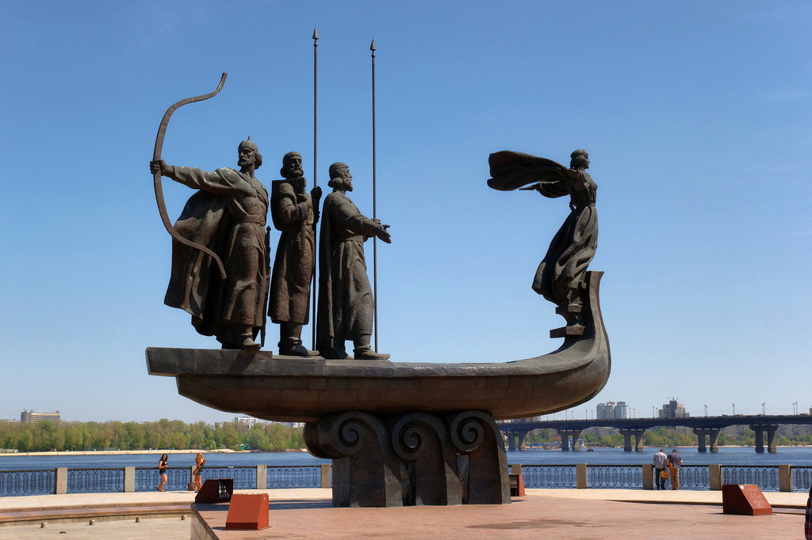
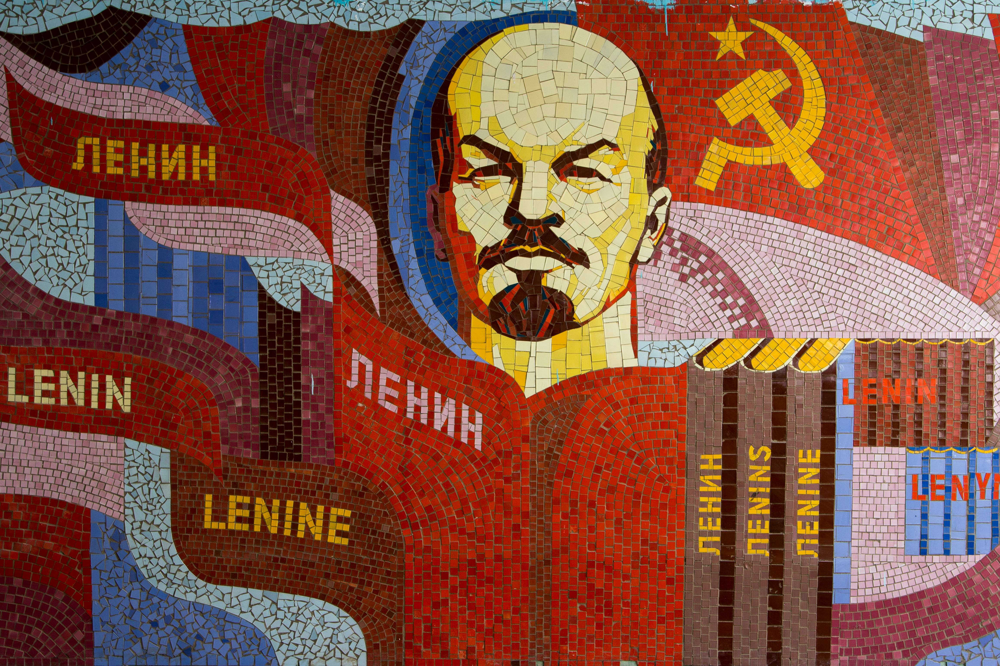
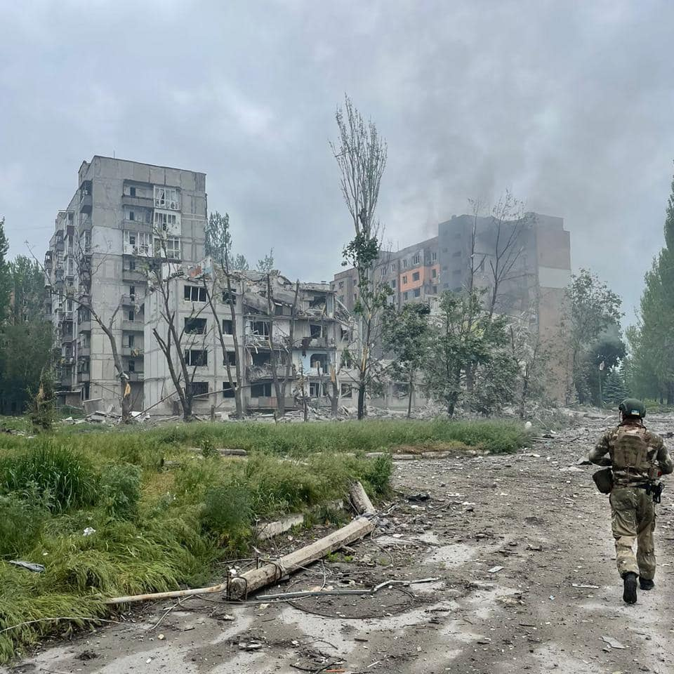

A Brief History
As the history of Ukraine dates back over 1100 years, it's difficult to do a complete summary of it's storied history. Below you will find some of the most significant events that have greatly influenced and continue to write Ukraine's story.

Kievan Rus'
Officially established as the first Eastern Slavic state in 880 AD by Varangian leader Rurik, the Kievan Rus' was the first Eastern Slavic state to unite surrounding tribes into a single entity. Extending from the south of Ukraine to Central Finland at it's height, the Kievan Rus' eventually succumbed to the Mongol Empire in the mid-13th century. Exacerbated by the fall of the Byzantine Empire, it further dissolved into various states and tribes before becoming a part of the Russian Empire in the 18th century.
Soviet Union
Like many states of the former Russian Empire, Ukraine became a part of the Soviet Union after the Bolshevik Uprising. This era in it's history was full of intense hardships including the Holodomor, a famine which resulted in the death of millions of citizens, the German occupation during WW2, and the Chernobyl disaster. Following the Soviet Union's dissolution in 1991, Ukraine became it's own sovereign state and that holds significant political power to this day.

Chernobyl Disaster
Located in Northern Ukraine in the city of Pripyat, the 4th reactor of the Chernobyl Nuclear Power Plant suffered a catastrophic explosion in 1986. This led to a complete reactor meltdown which resulted in significant contamination of 100,000 km² of land. In large thanks to the 400 man crew of miners, the disaster thankfully hadn't leached into the groundwater which could have polluted a large portion of Europe's water supply and the Black Sea. This event serves as a reminder for how critical proper safety precautions and disaster prevention is in the world of nuclear power.
War in Ukraine
In 2014 the Crimean Peninsula was invaded and later annexed by Russian para-military groups. This invasion culminated in the 2021 invasion of Ukraine, which continues to this day. As the deadliest war in Europe since WW2, the invasion has results in millions of casualties and displaced civilians. Which overwhelming support from around the world, Ukraine continues to withstand occupation in hopes of reclaiming stolen land and ultimately the return of peace in their land.
